Bienvenue sur Tonal
Quel type de photo souhaitez-vous retoucher ?
Choisissez une catégorie pour accéder à des presets pensés pour ce type de scène, ou partez du général si vous n'êtes pas sûr.

Bienvenue sur Tonal
Choisissez une catégorie pour accéder à des presets pensés pour ce type de scène, ou partez du général si vous n'êtes pas sûr.